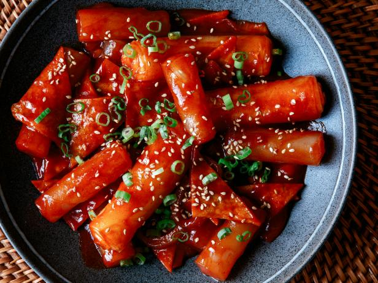

Tteok-bokki

Korean spicy rice cakes
Tteok-bokki is a popular korean street food. And while there are many variations they all include the spicy rice cake.
Ingredients
Main Dish
- Rice Cake (1 pack)
- Fish Cake (1/2 pack)
- Green Onion (1/2 bunch)
- Garlic (1 tbsp)
Sauce
- Gochujang (2 tbsp)
- Chili Flakes (3 tbsp)
- Cooking Syrup (1 tbsp)
- Sugar (1.5 tbsp)
- Pepper (1/2 tbsp)
- Soy Sauce (1.5 tbsp)
- Beef Stock (1/2 tbsp)
- Curry Powder (2/3 tbsp)
Steps
- Put rice cake in water for 10-15 minutes
- Cut fish cake in long strips while waiting for fish cake to soften
- Boil 1 cup of water
- Mix ingredients for the sauce into a paste
- Once water boils add garlic and paste
- Add the rest of the ingredients and finish cooking (5-10 minutes)